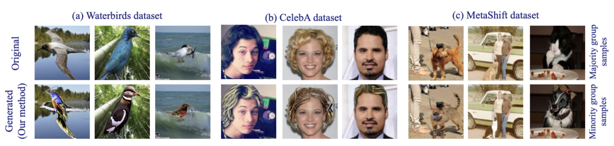
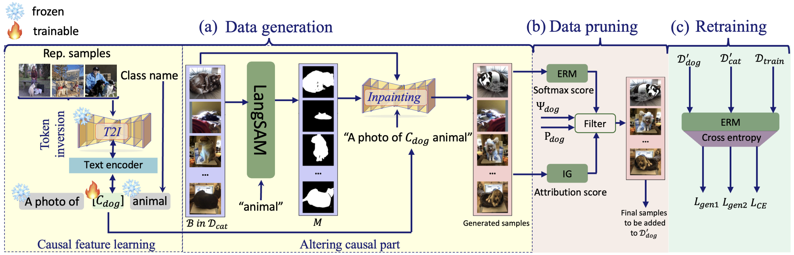
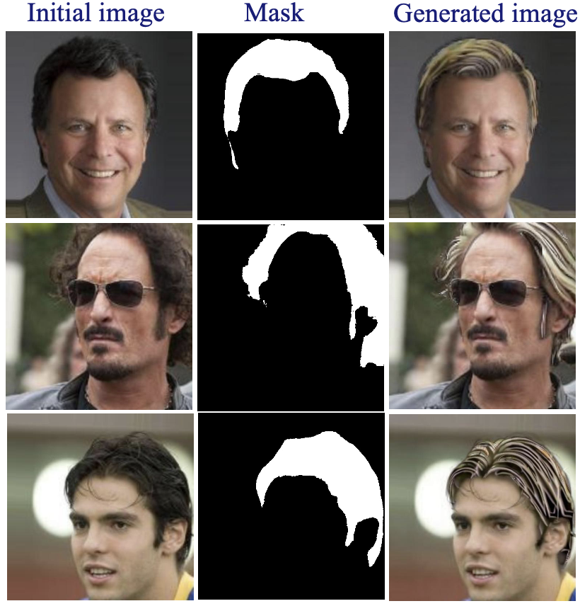
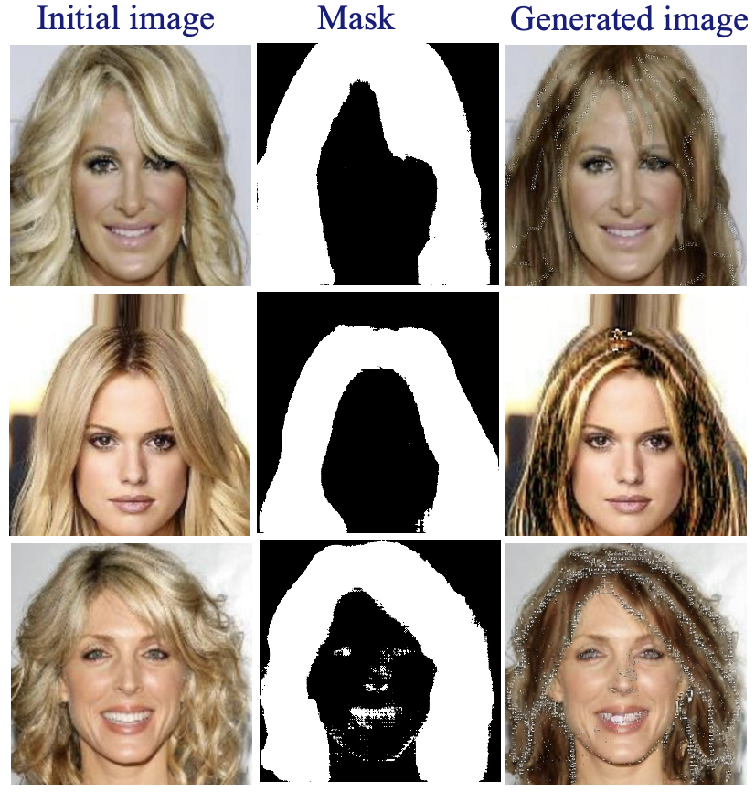
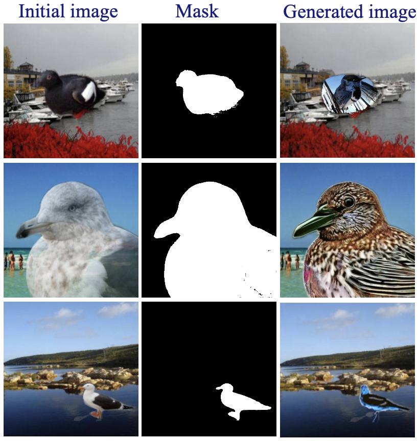
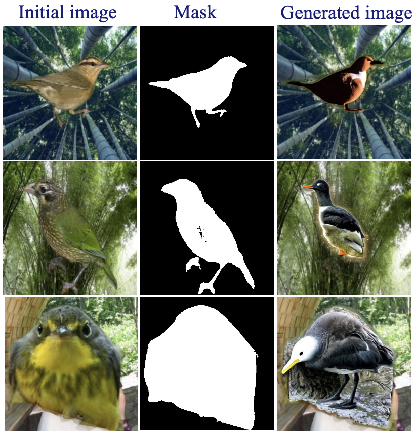
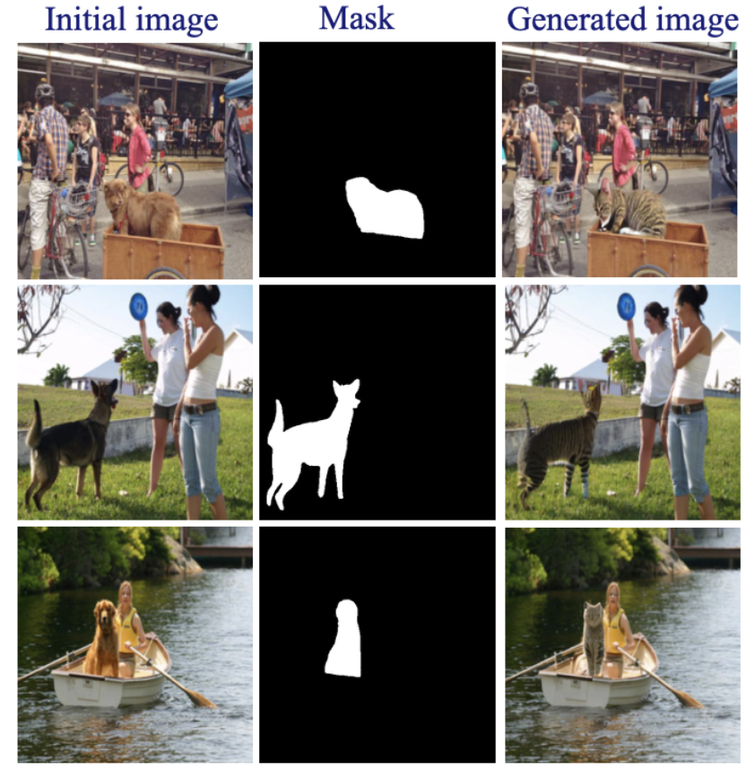
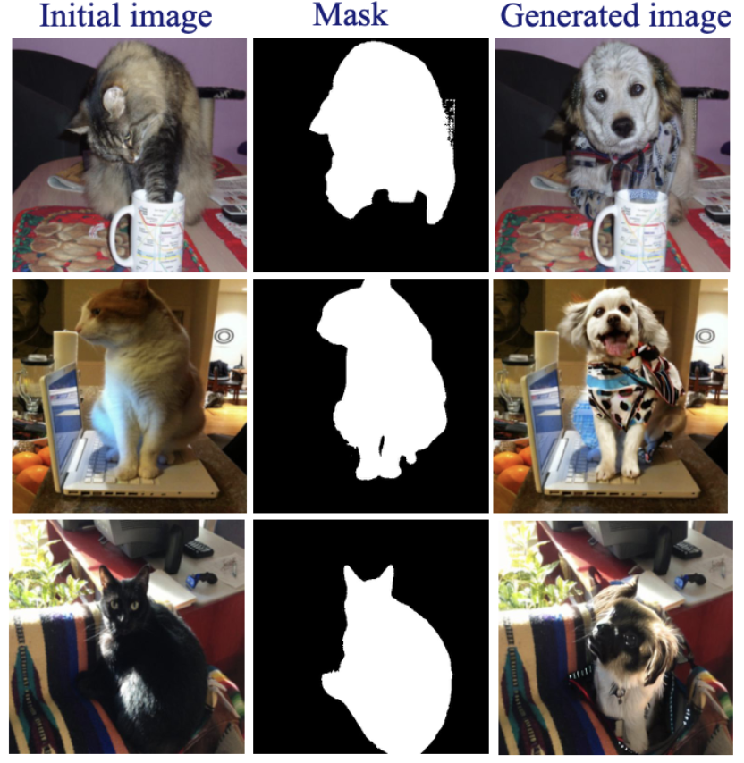

ICCV 2025

Deep neural networks trained with Empirical Risk Minimization (ERM) perform well when both training and test data come from the same domain, but they often fail to generalize to out-of-distribution samples. In image classification, these models may rely on spurious correlations that often exist between labels and irrelevant features of images, making predictions unreliable when those features do not exist.
We propose a Diffusion Driven Balancing (DDB) technique to generate training samples with text-to-image diffusion models for addressing the spurious correlation problem. First, we compute the best describing token for the visual features pertaining to the causal components of samples by a textual inversion mechanism. Then, leveraging a language segmentation method and a diffusion model, we generate new samples by combining the causal component with the elements from other classes. We also meticulous...






